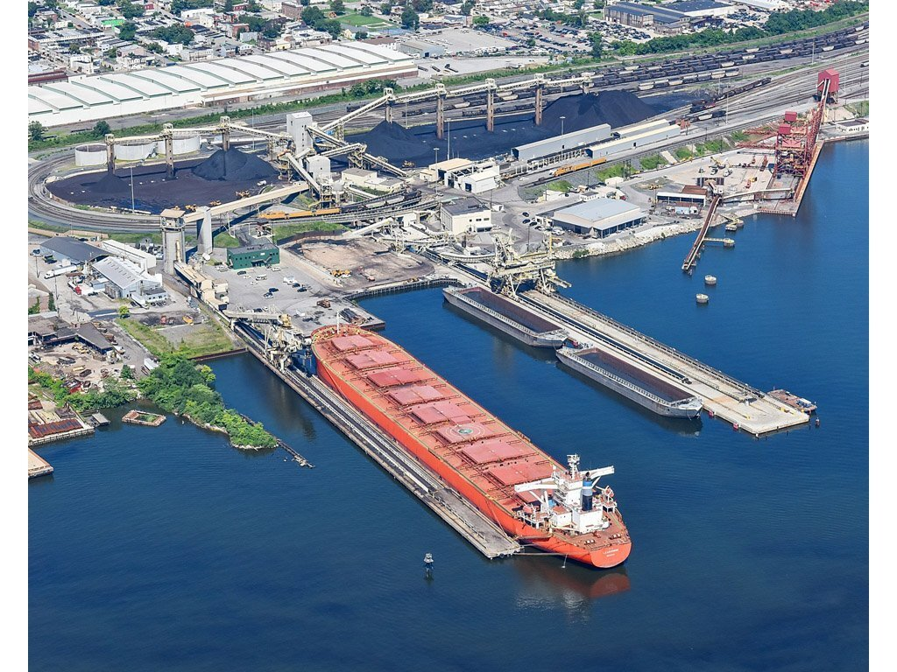
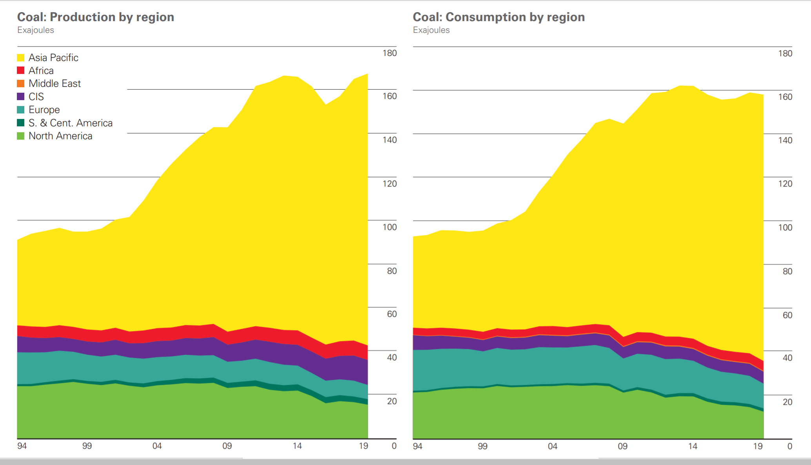
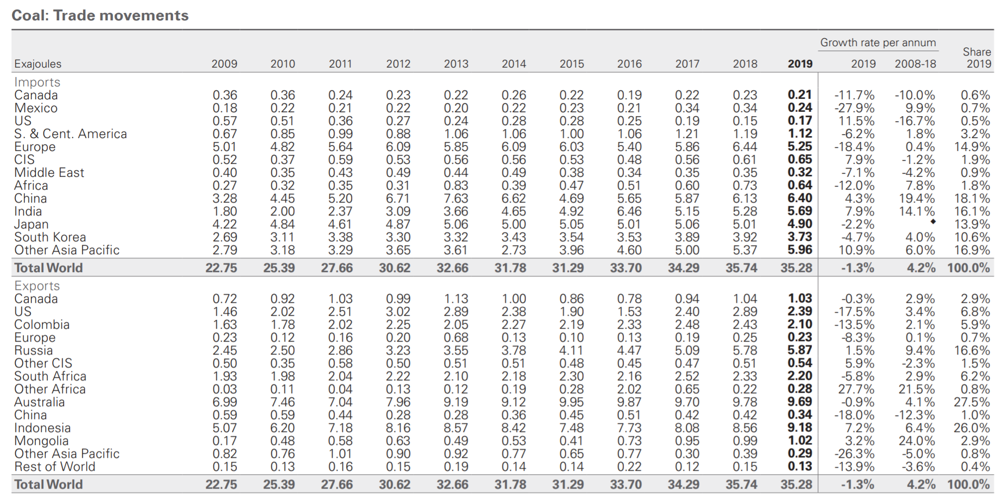
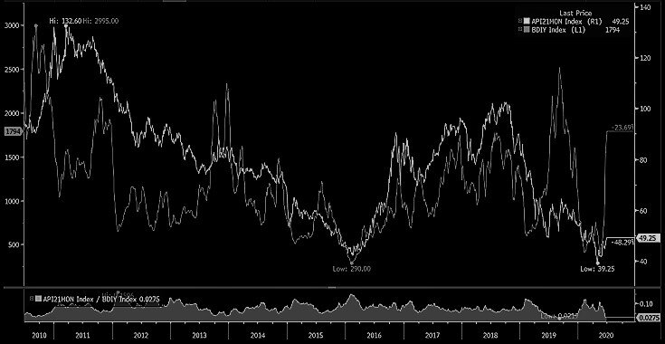

For almost a decade now and year after year, analysts have predicted the death of coal as a fossil fuel, and as a result, the structural decline in global coal trading. And yet, although still unpredictable from year to year, over the past decade coal trading has seen strong periods of activity pushing dry bulk rates higher in the process.
China remains the main driver when it comes to coal demand and trade, with roughly 10% of its annual consumption coming from imports. As theFinancial Times reports, such trend is alive a well, especially following the plunge in economic activity due to COVID-19 and the country’s initiatives for recovery:
China is approving plans for new coal power plant capacity at the fastest rate since 2015, in a sign that pressure to stimulate the economy is undermining a transition towards cleaner energy sources.
Although such increase in capacity won’t be stimulative for dry bulk in the near term, it bodes well longer term especially given the decline in coal demand from Europe that historically has been the second most important demand center globally. As the FT continues, “China approved the construction of more coal power plant capacity in the period to mid-June than in all of 2018 and 2019 combined” .
Such a rate in coal power plant capacity increase is not unprecedented for China, but still impressive given the common perception that coal demand is in structural decline. Yet, with roughly 77% of global consumption coming from Asia-Pacific and with average growth over the last decade exceeding 2% per year, the death of coal as a fossil fuel has been greatly exaggerated.
As BP reported last week in theirannual energy review, coal consumption in the Asia-Pacific is indeed off its all time high set 2013, but only marginally while the developed world has seen drop of 26% during the same period.

Looking closely at Asia-Pacific region, since 2010, consumption is up almost 20%, and although as a percentage of the total energy mix coal is down, coal demand is still growing, and given the higher base, more tons of coal are traded and shipped than a decade ago.
Last year, coal trading declined from the previous year’s all time high, mainly reflecting lower import volumes in the developed world, partly offset by strong volumes from China, India and the rest of Asia-Pacific which combined account for more than 75% of all coal imports (yet, export regions are more evenly split between east and west, a major driver for dry bulk shipping).

For dry bulk this is good news, though the growth rate has declined significantly versus the previous decade. With coal being the second most important commodity for dry bulk, such a trend is having a profound impact on long term growth expectations that continue to come down versus the previous decade. On the other hand, with iron ore now the only driver of significant growth, the overall trend for dry bulk remains positive, though still at a much lower trend rate versus the 2000’s, when dry bulk growth averaged north of 5% per annum.
Finally, coal prices remains highly dependent and extremely levered to the global economy. One can also make the argument that dry bulk rates and coal prices follow similar trend over time (after all, a lot of coal is priced CIF). Although difficult to pinpoint the drivers for each market, it seems that higher coal prices are generally beneficial for dry bulk rates. The recent spike in the Baltic Dry Index is more iron ore driven though, and probably an outlier in the historical relationship between coal and dry bulk.
